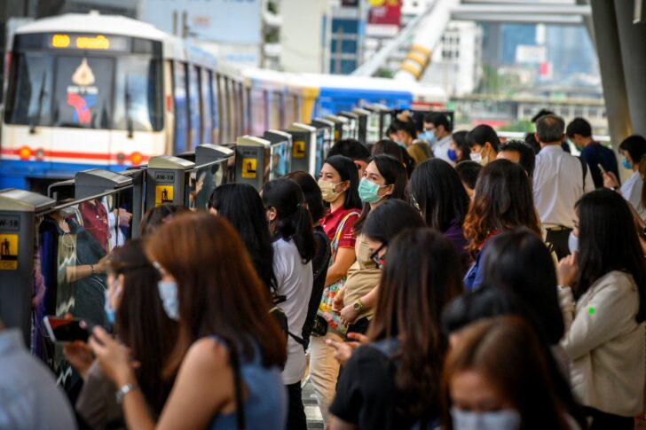
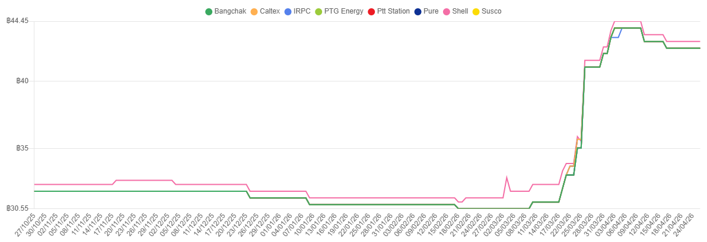

E-Book เรื่อง “ทางรอดคนเมือง ในยุคของแพงและสงคราม” ทำขึ้นเพื่อชวนมองว่าสงครามและวิกฤติพลังงานไม่ได้เป็นเรื่องไกลตัว เพราะสุดท้ายแล้วมันส่งผลมาถึงค่าอาหาร ค่าเดินทาง และค่าของใช้ในชีวิตประจำวันของคนเมืองโดยตรง
นอกจากนี้ ยังต้องการนำหลักเศรษฐกิจพอเพียงมาเล่าในแบบที่เข้าใจง่ายและใช้ได้จริงกับชีวิตประจำวัน ไม่ว่าจะเป็นการวางแผนเงิน ลดรายจ่าย ทำอาหารเอง หรือเตรียมเงินสำรองไว้เผื่อเหตุฉุกเฉิน
เมืองที่พึ่งพาการขนส่งและตลาดเป็นหลัก จึงได้รับผลกระทบจากราคาพลังงานและต้นทุนสินค้าอย่างชัดเจน
กลุ่มเป้าหมาย
- นักศึกษา ที่ต้องจัดการเงินในชีวิตประจำวันและค่าใช้จ่ายด้านอาหาร
- คนวัยทำงาน ที่ต้องรับมือกับค่าเดินทาง ค่าอาหาร และค่าใช้จ่ายประจำเดือน
- ครัวเรือนรายได้น้อยถึงปานกลาง ที่ได้รับผลกระทบจากค่าครองชีพสูงมากที่สุด

ในปี 2026 สถานการณ์ความตึงเครียดในตะวันออกกลางและความขัดแย้งระหว่างประเทศ ส่งผลกระทบโดยตรงต่อราคาพลังงานในตลาดโลก ราคาน้ำมันพุ่งสูงกว่า 50% ทำให้ต้นทุนการขนส่งและราคาสินค้าทั่วไทยเพิ่มสูงขึ้นตาม
กรุงเทพมหานครซึ่งพึ่งพาการขนส่งและตลาดเป็นหลัก ได้รับผลกระทบอย่างเต็ม ๆ ทั้งค่าอาหาร ค่าเดินทาง และค่าของใช้ในชีวิตประจำวัน

ที่มา: motorist.co.th/petrol-prices
จากข้อมูลราคาน้ำมันจะเห็นว่า เมื่อราคาพลังงานปรับตัวสูงขึ้น ต้นทุนการขนส่งสินค้าและบริการต่าง ๆ ก็เพิ่มขึ้นตาม ส่งผลให้ประชาชนต้องแบกรับค่าครองชีพที่สูงขึ้น
แม้รัฐบาลจะออกโครงการ “ไทยช่วยไทยพลัส” เพื่อช่วยเหลือประชาชนกว่า 10 ล้านคน แต่ด้วยภาระหนี้สาธารณะที่สูง การพึ่งพามาตรการภาครัฐเพียงอย่างเดียวจึงไม่ยั่งยืน
ประชาชนต้องเริ่มวางแผนตนเอง และใช้หลักปรัชญาเศรษฐกิจพอเพียงเป็นแนวทางในการรับมือ
คืออาวุธในยามวิกฤติ
หลักปรัชญาเศรษฐกิจพอเพียงของในหลวงรัชกาลที่ 9 ประกอบด้วย 3 หลักการ และ 2 เงื่อนไข ที่สามารถนำมาปรับใช้กับชีวิตคนเมืองได้อย่างลงตัว
ในยุคต้นทุนสูง
ราคาพลังงานที่เพิ่มขึ้นส่งผลให้ต้นทุนอาหารสูงขึ้นตาม คนเมืองต้องแบกรับค่าใช้จ่ายด้านอาหารที่สูงขึ้น และอาจส่งผลต่อคุณภาพการบริโภคโดยตรง
การประยุกต์ใช้หลักปรัชญาเศรษฐกิจพอเพียงในด้านอาหารและสุขภาพ จึงสำคัญไม่แพ้การวางแผนการเงิน เพราะสุขภาพที่แย่ลงอาจนำไปสู่รายจ่ายฉุกเฉินที่สูงกว่าเดิม
ของแพงแบบชาวเมือง
การรับมือของแพงไม่จำเป็นต้องเริ่มจากการเปลี่ยนชีวิตทั้งหมดทันที แต่สามารถเริ่มจากการมองเห็นพฤติกรรมการใช้เงินของตัวเอง แล้วค่อย ๆ ปรับทีละขั้น
ก่อนแก้อะไร ต้องรู้ก่อนว่าตัวเองอยู่ตรงไหน จดบันทึกรายรับ-รายจ่ายทุกบาทในแต่ละเดือน แล้วแบ่งเป็น “จำเป็น” กับ “ไม่จำเป็น” เพื่อให้เห็นว่าเงินหายไปไหน
เครื่องมือที่ใช้ได้: แอป MeowJot หรือสมุดจดรายรับ-รายจ่าย
เมื่อเห็นภาพรายจ่ายแล้ว ให้ระบุสิ่งที่สามารถลดหรือตัดได้ทันที เช่น Subscription ที่ไม่ได้ใช้ การสั่ง Delivery ทุกวัน หรือกาแฟแก้วละ 150 บาทวันละแก้ว
ลดกาแฟนอก 1 แก้ว/วัน (80 บาท) = 2,400 บาท/เดือน
ยกเลิก Streaming 2 แพลตฟอร์ม = 400–600 บาท/เดือน
เครื่องมือที่ช่วยจัดงบได้ง่ายคือ 50/30/20 คือ จำเป็น 50% / อยากได้ 30% / ออม 20%
ลองใส่รายได้ของคุณ
อาหารคือรายจ่ายที่ใหญ่ที่สุดและควบคุมได้มากที่สุด วางแผนเมนู 1 สัปดาห์ล่วงหน้า ซื้อวัตถุดิบในคราวเดียว ลดทั้งค่าใช้จ่ายและการตัดสินใจสั่ง Delivery
| มื้ออาหาร | สั่ง Delivery | ทำเอง |
|---|---|---|
| ข้าวผัดไข่ | 80–100 บาท | 15–25 บาท |
| ข้าวผัดผักรวม | 80–110 บาท | 20–35 บาท |
| ข้าวไข่เจียว | 80–100 บาท | 10–20 บาท |
ทำเองวันละ 2 มื้อ = 1,800 บาท/เดือน
ประหยัดได้ 4,200 บาท/เดือน
เงินที่ประหยัดได้จากอาหารสามารถนำไปใช้สร้างเงินสำรองฉุกเฉิน หรือแบ่งเป็นเงินออมระยะยาวได้โดยไม่ต้องเพิ่มรายได้ทันที
เงินส่วนที่เหลือจากการลดรายจ่าย ควรถูกแยกไปเป็นเงินสำรองฉุกเฉินก่อนเสมอ ตั้งเป้า 3 เดือนของค่าใช้จ่ายพื้นฐาน เพื่อรองรับเหตุไม่คาดคิด เช่น ตกงาน เจ็บป่วย หรือของแพงพุ่งขึ้นกะทันหัน
ถ้าออมได้ 2,000 บาท/เดือน → ใช้เวลาประมาณ 15 เดือน
วิธีที่ทำได้ง่ายคือแยกเงินออมทันทีหลังรับเงินเดือน ก่อนนำเงินส่วนที่เหลือไปใช้จ่ายในชีวิตประจำวัน
ในยามวิกฤติ ข้อมูลผิดและการกักตุนเกินจำเป็นคือตัวการที่ทำให้ปัญหารุนแรงขึ้น จึงควรตรวจสอบข้อมูลก่อนเชื่อ และตัดสินใจบนฐานความจริง ไม่ใช่ความกลัว
แหล่งข้อมูลที่เชื่อถือได้:
- กรมพลังงาน
- ธนาคารแห่งประเทศไทย
- สำนักงานสถิติแห่งชาติ
ลองดูตัวอย่างของคนวัยทำงานในกรุงเทพฯ ที่มีรายได้เดือนละ 18,000 บาท และต้องเจอกับค่าอาหาร ค่าเดินทาง รวมถึงค่าของใช้ที่แพงขึ้นเรื่อย ๆ
| รายการ | ก่อนปรับ | หลังปรับ | ประหยัดได้ |
|---|---|---|---|
| ค่าอาหาร | 6,000 | 3,000 | 3,000 |
| กาแฟ/เครื่องดื่ม | 2,400 | 800 | 1,600 |
| ค่าเดินทาง | 2,500 | 2,000 | 500 |
| Subscription | 600 | 200 | 400 |
| เงินออม | 500 | 3,000 | +2,500 |
เมื่อนำหลัก พอประมาณ มีเหตุผล และสร้างภูมิคุ้มกัน มาปรับใช้ ผลลัพธ์เปลี่ยนไปอย่างชัดเจน โดยเฉพาะเงินออมที่เพิ่มขึ้นจาก 500 บาทเป็น 3,000 บาทต่อเดือน
ตัวเอง ต่อผู้อื่นและสังคม
ต่อตัวเอง
- เข้าใจว่าสงครามและวิกฤติโลกไม่ได้ไกลตัว แต่ส่งผลกับค่าใช้จ่ายในชีวิตประจำวันโดยตรง
- ฝึกคิดและมองปัญหาแบบเป็นระบบ รับมือกับของแพงได้เหมาะกับตัวเอง
- นำหลักเศรษฐกิจพอเพียงมาปรับใช้จริง เช่น วางแผนการเงินและเลือกใช้จ่ายให้คุ้มค่า
- ได้ฝึกทักษะการค้นคว้าและนำเสนอข้อมูลในรูปแบบ E-Book
ต่อผู้อื่น
- คนอ่านสามารถเข้าใจสถานการณ์วิกฤติได้ง่ายขึ้น เพราะเชื่อมกับชีวิตประจำวัน
- ได้แนวทางที่นำไปใช้ได้จริง เช่น การลดค่าใช้จ่าย การเลือกกิน หรือการวางแผนการเงิน
- สามารถนำไปปรับใช้ต่อในชีวิตของตนเองหรือครอบครัวได้ทันที
ต่อสังคม
- ส่งเสริมให้คนใช้ชีวิตแบบพอดี ไม่ฟุ่มเฟือย ลดการบริโภคเกินความจำเป็น
- ทำให้คนตระหนักถึงความสำคัญของการเตรียมตัวรับมือวิกฤติ
- สร้างชุมชนที่แข็งแรงและพึ่งพาตัวเองได้ในระยะยาว
ไม่ใช่การขาดแคลน
แต่คือการมีพอ รู้จักพอ
และพร้อมรับมือกับ
ความไม่แน่นอน”
พระบาทสมเด็จพระเจ้าอยู่หัว รัชกาลที่ 9
นายธีรวิทย์ พงษ์คุณาวุฒิ
รหัสนักศึกษา 65070502423